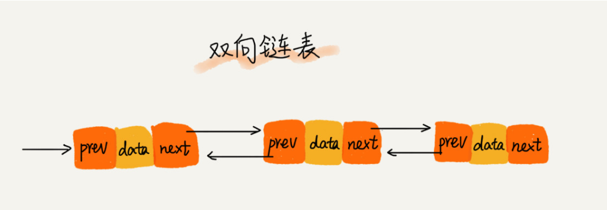
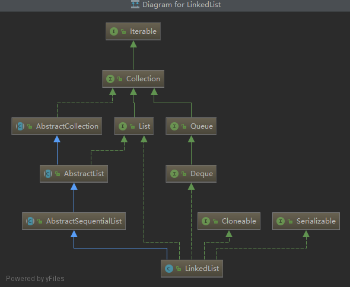

LinkedList底层采用双向链表，如果对链表这种结构比较熟悉的话，那LinkedList的实现原理看明白就相当容易。

链表通过“指针”将一组零散的内存块串联起来使用，每一个元素（节点）通过指针指向它的下一个元素，最后一个节点的下一个指向为null，而双向链表就是除头节点的每一个元素都有指针同时再指向它的上一个元素。链表不同于数组，由于其地址的不连续，且元素占用大小的不确定，所以没法根据地址直接取值，获取元素时需要遍历访问，而双向链表相比于单向链表，一定程度上占用了额外的内存，但支持了双向遍历，加快了元素索取。

public class LinkedList<E> extends AbstractSequentialList<E>
implements List<E>, Deque<E>, Cloneable, java.io.SerializableLinkedList继承于AbstractSequentialList抽象类，AbstractSequentialList又继承于AbstractList，最终实现了List的接口，所以LinkedList支持List集合的一些常规操作，但同时LinkedList又实现了Queue接口，所以LinkedList也支持队列的一些使用，例如peek、pop等。
transient int size = 0;
/**
* Pointer to first node.
* Invariant: (first == null && last == null) ||
* (first.prev == null && first.item != null)
*/
transient Node<E> first;
/**
* Pointer to last node.
* Invariant: (first == null && last == null) ||
* (last.next == null && last.item != null)
*/
transient Node<E> last;LinkedList的主要成员变量就3个，大小size、头结点first、尾节点last，这也符合双向链表的特点，根据头或者尾部节点就可以遍历整个链表。至于节点类型，则是内部类Node。
private static class Node<E> {
// 节点数据
E item;
// 下一节点
Node<E> next;
// 上一节点
Node<E> prev;
Node(Node<E> prev, E element, Node<E> next) {
this.item = element;
this.next = next;
this.prev = prev;
}
}Node类就简简单单三个属性，也即双向链表节点必须的3个要素，当前节点数据item，下一节点next和上一节点prev。
public LinkedList() {
}
public LinkedList(Collection<? extends E> c) {
this();
// 添加所有元素
addAll(c);
}LinkedList主要就两个构造方法，一个无参的构造，什么也没做，另一个接受集合的构造，该方法初始化了LinkedList对象并添加了所有集合c的元素。
至于addAll方法，我们后面再看。
LinkedList因为基于链表，所以不需要提前申请内存大小，也就不存在初始化指定容量大小，因而LinkedList是没有初始化指定size的构造方法的。
LinkedList的添加方法有很多，首先最简单也是最常用的尾部添加。
public boolean add(E e) {
linkLast(e);
return true;
}主要逻辑就是linkLast(E e) 了。
void linkLast(E e) {
final Node<E> l = last;
// 构造新的节点，上一节点指向原来的last
final Node<E> newNode = new Node<>(l, e, null);
last = newNode;
if (l == null)
first = newNode;
else
l.next = newNode;
size++;
// 操作数自增
modCount++;
}尾部添加，就是构造新的节点newNode，并将改节点的上一节点prev指向原来的last，同时改节点为新的last节点。l == null判断是否当前是第一次添加，如果 l 为 null，则newNode同时也是头结点，当前集合中仅有newNode一个元素，不为null时，因为双向链表，所有 l 的下一个节点next指向了newNode。
最后就是大小size自增与操作计数modCount的自增，尾部添加元素就完成了。
尾部操作除了add，还有个addLast(E e) 方法，两者除了返回值不一样，没有任何差别了，都是调用的linkLast方法。
public void addLast(E e) {
linkLast(e);
} public void add(int index, E element) {
// 范围检查
checkPositionIndex(index);
if (index == size)
linkLast(element);
else
linkBefore(element, node(index));
}对于中间添加，需要首先进行范围检查，即保证插入位置index在[0, size]之间，否则抛出数组越界异常IndexOutOfBoundsException，呃……数组越界……
private void checkPositionIndex(int index) {
if (!isPositionIndex(index))
throw new IndexOutOfBoundsException(outOfBoundsMsg(index));
}
private boolean isPositionIndex(int index) {
return index >= 0 && index <= size;
}如果index == size，其实就是尾部插入，所以调用了linkLast，这个刚刚尾部插入已经说过。
如果index < size，中间插入的时候，需要分两步：
node方法是一个频繁被调用的方法，LinkedList 的很多操作都依赖于该方法查找到对应的元素。根据索引 index 获取元素时，因为双向链表的支持前后遍历，所以进行了位置判断，index < (size >> 1)，与中间位置比较，靠前则前序遍历，否则后序遍历。
Node<E> node(int index) {
// assert isElementIndex(index);
if (index < (size >> 1)) { //前序遍历
Node<E> x = first;
for (int i = 0; i < index; i++)
x = x.next;
return x;
} else {
Node<E> x = last;
for (int i = size - 1; i > index; i--)
x = x.prev;
return x;
}
}遍历逻辑很简单，循环到index上一个节点（后序则是下一个）位置，获取next（后序使用prev）返回index位置对应的节点Node对象succ。
void linkBefore(E e, Node<E> succ) {
// assert succ != null;
final Node<E> pred = succ.prev;
final Node<E> newNode = new Node<>(pred, e, succ);
succ.prev = newNode;
if (pred == null)
first = newNode;
else
pred.next = newNode;
size++;
modCount++;
}linkBefore和linkLast几乎完全一样，除了一个是添加到 last 节点后，一个是添加到 succ 节点后。
对于中间插入，如果index为0时，其实就是头部插入，这个时候比不用调用node方法去查找元素了，所以LinkedList也提供了一个addFirst(E e)方法。
public void addFirst(E e) {
linkFirst(e);
}
private void linkFirst(E e) {
final Node<E> f = first;
final Node<E> newNode = new Node<>(null, e, f);
first = newNode;
if (f == null)
last = newNode;
else
f.prev = newNode;
size++;
modCount++;
}LinkedList提供尾部批量插入和中间批量插入，但内部实现其实都是调用的addAll(int index, Collection<? extends E> c)。
public boolean addAll(Collection<? extends E> c) {
return addAll(size, c);
}
public boolean addAll(int index, Collection<? extends E> c) {
// 范围校验
checkPositionIndex(index);
Object[] a = c.toArray();
int numNew = a.length;
if (numNew == 0)
return false;
// succ是index位置元素，pred是index的前一个元素
Node<E> pred, succ;
if (index == size) { // 尾部插入
succ = null;
pred = last;
} else {
succ = node(index);
pred = succ.prev;
}
// 循环插入
for (Object o : a) {
@SuppressWarnings("unchecked") E e = (E) o;
Node<E> newNode = new Node<>(pred, e, null);
if (pred == null)
first = newNode;
else
pred.next = newNode;
pred = newNode;
}
// 衔接处理
if (succ == null) {
last = pred;
} else {
pred.next = succ;
succ.prev = pred;
size += numNew;
modCount++;
return true;
}addAll(int index, Collection<? extends E> c)方法初一看，好像有些复杂，但明白其原理后，就变得清晰多了。链表插入就如同接水管，先从某一个位置断开水管，然后用接口连接上需要接入的部分。这个方法里，关键的是两个Node对象pred, 和 succ，succ 是index位置元素，pred是index的前一个元素（变动）。
特殊情况 index == size 时，即尾部插入，所以succ 就是null了，而 pred则为尾部节点last。
然后就是循环赋值了，在循环中构造node节点，类似于linkLast。
最后的是衔接处理，如果尾部插入的话，那pred就是尾部节点了（循环赋值时有pred = newNode处理），所以只需要指定last = pred。而中间插入，指明 pred.next = succ、succ.prev = pred即将index位置与新的前一个元素绑定到一起。
LinkedList 除了提供通用的 get，因为其属性中含有 first 和 last 节点，也提供了 getFirst 和 getLast 方法。
public E getFirst() {
final Node<E> f = first;
if (f == null)
throw new NoSuchElementException();
return f.item;
}
public E getLast() {
final Node<E> l = last;
if (l == null)
throw new NoSuchElementException();
return l.item;
}对于getFirst 和 getLast，因为是成员变量，省去了查找的过程，直接返回其节点 item 即可。
public E get(int index) {
// 范围校验
checkElementIndex(index);
// node方法获取节点
return node(index).item;
}而通过指针的获取，主要就是调用node方法找对index对应的节点，node方法前面已经讲过，不再累述。
对于LinkedList集合中元素的修改，需要先查找到该元素，然后更改其Node节点数据item即可。
public E set(int index, E element) {
// 范围检查
checkElementIndex(index);
// 获取index对应位置的Node对象
Node<E> x = node(index);
E oldVal = x.item;
x.item = element;
return oldVal;
}LinkedList提供了很多种删除元素的方法，但是内部实现逻辑基本都相同，即找到对应的Node节点，然后将指向该节点的指向替换。
我们先来看看根据索引的remove(int index)方法。
public E remove(int index) {
// 范围检查
checkElementIndex(index);
// 解除节点指针连接
return unlink(node(index));
}删除时的范围检查就不说了，node方法也不再多提，删除的主要逻辑就是unlink(Node
E unlink(Node<E> x) {
// assert x != null;
final E element = x.item;
// 下一节点
final Node<E> next = x.next;
// 前一节点
final Node<E> prev = x.prev;
// 前一节点prev存在则将prev的下一节点指向next，不存在则当前移除节点其实就是头结点，next就是新的first
if (prev == null) {
first = next;
} else {
prev.next = next;
x.prev = null;
}
// 下一节点next存在，则将next上一节点指向prev，不存在则说明当前移除的是未节点
if (next == null) {
last = prev;
} else {
next.prev = prev;
x.next = null;
}
// 触发GC工作
x.item = null;
size--;
// 操作计数器自增
modCount++;
return element;
}整个unlink方法就是个标准的双向链表删除操作，三个节点prev，x，next，删除x 其实就是将 prev指向next，并next指向prev，只是其中多了一些特殊的判断。
看了按索引删除的remove，再来看另外两个特例removeFirst 和 removeLast。
public E removeFirst() {
final Node<E> f = first;
if (f == null)
throw new NoSuchElementException();
return unlinkFirst(f);
}
private E unlinkFirst(Node<E> f) {
// assert f == first && f != null;
final E element = f.item;
final Node<E> next = f.next;
f.item = null;
f.next = null; // help GC
first = next;
if (next == null)
last = null;
else
next.prev = null;
size--;
// 操作计数器自增
modCount++;
return element;
}unlinkFirst就是个简化版的unlink方法，因为只用处理头结点，下一个节点next存在就将next作为新的first。
同理removeLast也是类似，这里各位看官自行进行体会。
public E removeLast() {
final Node<E> l = last;
if (l == null)
throw new NoSuchElementException();
return unlinkLast(l);
}
private E unlinkLast(Node<E> l) {
// assert l == last && l != null;
final E element = l.item;
final Node<E> prev = l.prev;
l.item = null;
l.prev = null; // help GC
last = prev;
if (prev == null)
first = null;
else
prev.next = null;
size--;
modCount++;
return element;
}而LinkedList还有个无参的remove，这个是Deque接口定义的，实现也就是调用的removeFirst。
public E remove() {
return removeFirst();
}根据元素移除其实和根据索引移除没有太大差别，只不过找到对应节点的方式发生了变化。
public boolean remove(Object o) {
// 判断元素是否为null，因为LinkedList支持添加null
if (o == null) {
for (Node<E> x = first; x != null; x = x.next) {
if (x.item == null) {
unlink(x);
return true;
}
}
} else {
for (Node<E> x = first; x != null; x = x.next) {
if (o.equals(x.item)) {
unlink(x);
return true;
}
}
}
return false;
}可以看到，无论元素是否为null，都是先找到该节点，然后调用了unlink方法。
因为支持双向遍历的特性，LinkedList很人性的提供了前序删除和后序删除的方法，即removeFirstOccurrence与removeLastOccurrence。
public boolean removeFirstOccurrence(Object o) {
return remove(o);
}
public boolean removeLastOccurrence(Object o) {
if (o == null) {
// 后序遍历
for (Node<E> x = last; x != null; x = x.prev) {
if (x.item == null) {
unlink(x);
return true;
}
}
} else {
// 后序遍历
for (Node<E> x = last; x != null; x = x.prev) {
if (o.equals(x.item)) {
unlink(x);
return true;
}
}
}
return false;
}这两个方法没什么玄幻的，removeLastOccurrence只是反序遍历了集合。
在LinkedList类中，并没有removeAll方法，因为他未对其进行重写，而是使用了父类AbstractCollection的
public boolean removeAll(Collection<?> c) {
Objects.requireNonNull(c);
boolean modified = false;
// 使用迭代器
Iterator<?> it = iterator();
while (it.hasNext()) {
if (c.contains(it.next())) {
it.remove();
modified = true;
}
}
return modified;
}removeAll的实现原理其实就是迭代删除，迭代器的获取方法iterator()在AbstractCollection类中只是个抽象方法，AbstractList类有其实现，但AbstractSequentialList类中覆写该方法。
public Iterator<E> iterator() {
return listIterator();
}iterator方法会调用listIterator()，这个方法实现在AbstractList类中，他调用了listIterator(int index)方法，但LinkedList重写了该方法，所以兜兜转转最终还是回到了LinkedList中。
public ListIterator<E> listIterator(int index) {
checkPositionIndex(index);
return new ListItr(index);
}这里ListItr对象是LinkedList的内部类。
private class ListItr implements ListIterator<E> {
private Node<E> lastReturned;
private Node<E> next;
private int nextIndex;
// 期待计数器
private int expectedModCount = modCount;ListItr在初始化的时候，会将操作计数器modCount赋值给expectedModCount，而之后的每次remove方法，都会校验expectedModCount与modCount是否相等，否则会抛出异常。
ListItr的remove方法，每次调用后，都将expectedModCount自增，已达到和unlink中modCount++的同步，从而使得modCount == expectedModCount 一直成立，这也是为什么我们循环删除LinkedList元素时需要使用其迭代器的remove方法。
public void remove() {
// 校验modCount
checkForComodification();
if (lastReturned == null)
throw new IllegalStateException();
Node<E> lastNext = lastReturned.next;
// unlink删除节点逻辑，该方法中有modCount++;
unlink(lastReturned);
if (next == lastReturned)
next = lastNext;
else
nextIndex--;
lastReturned = null;
// expectedModCount自增
expectedModCount++;
}
final void checkForComodification() {
// expectedModCount与modCount必须相等
if (modCount != expectedModCount)
throw new ConcurrentModificationException();
}